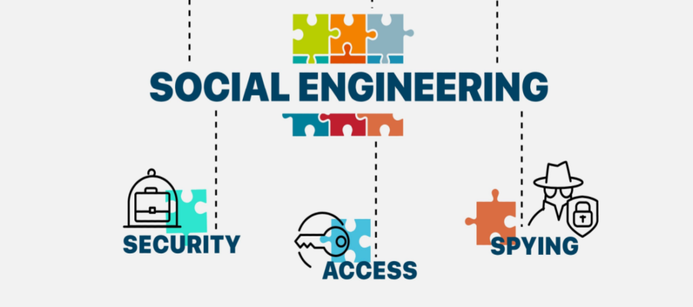
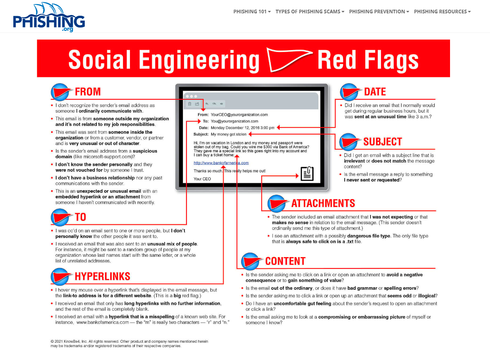
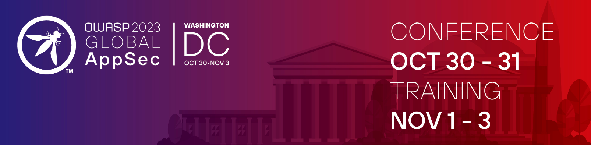
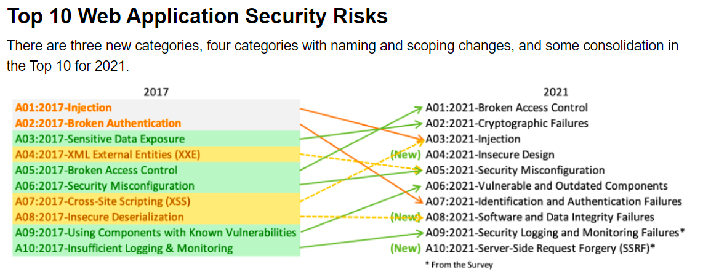
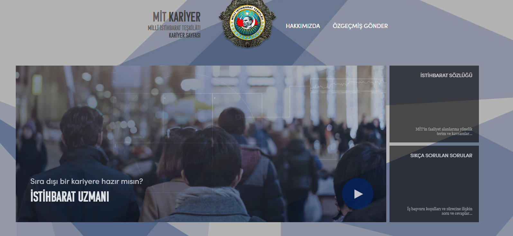

ACT-8

Social Engineering : The best topic for me exactly Social Engineering. If we can use it we may have really good opportunuties.
Recently Cyber experts say :"Lot of vulnurabilities can be found thanks to using Social Engineering". Social Engineering is : Manipulating , affecting people to get what you want
every way is possible till get what you want (Telling lia , ignorince , tricking ...). There is a really good example about it. You can analyze your neighbour for using his/Her trashes,
when you analyze the thrash you can find the habit of eating , is there junk food , healty foods, alcohols... That is basic example. People can get more sensitive informations with social engineering.
The other one is looking somebody's desk and predicting the password of working pc. If tehere is a picture on desk about family probably the password it is. There are so many methods for this but i want to explain most populer.
The worst thing is while i was searching everybody thinks Social Engineering and "Phishing" are same. They are similar like each other but they are not same.
The Phishing is a method of Social Engineering. The basically that is : Generally using e-mail send messages to people for getting sensitive informations (credit cards , passwords,private life datas...)
Logic is creating a website interface and make provide the victim write and click on it. For instance

Firs of all we need to analyze mails carefully. What is the extencion of mail , what is it about , is it regular , there are some mistakes , actually if we examine the mail according this questions we can decide it.
We need to evaluate everything.
Owasp , Top Ten Risk Firstly i want to explain what is "OWASP" is nonprofit foundation that works to improve the security of software. Through community-led open-source software projects, hundreds of local
chapters worldwide, tens of thousands of members, and leading educational and training conferences, the OWASP Foundation is the source for developers and technologists to secure the web. In short way OWASP is the defender against cybercriminals.


Owasp Top Ten have searched threats most populer and they made a list from them. These are vulnurabilities and people need to carry of them.
The most updated version of it in 2021 probably this year they will update it again. Because goverments try to create new areas about cyber security. Especially Türkiye is really improved.(MIT) (
National Intelligence Agency foundation of Turkiye) They are try to create cyber armies and good personnals.
